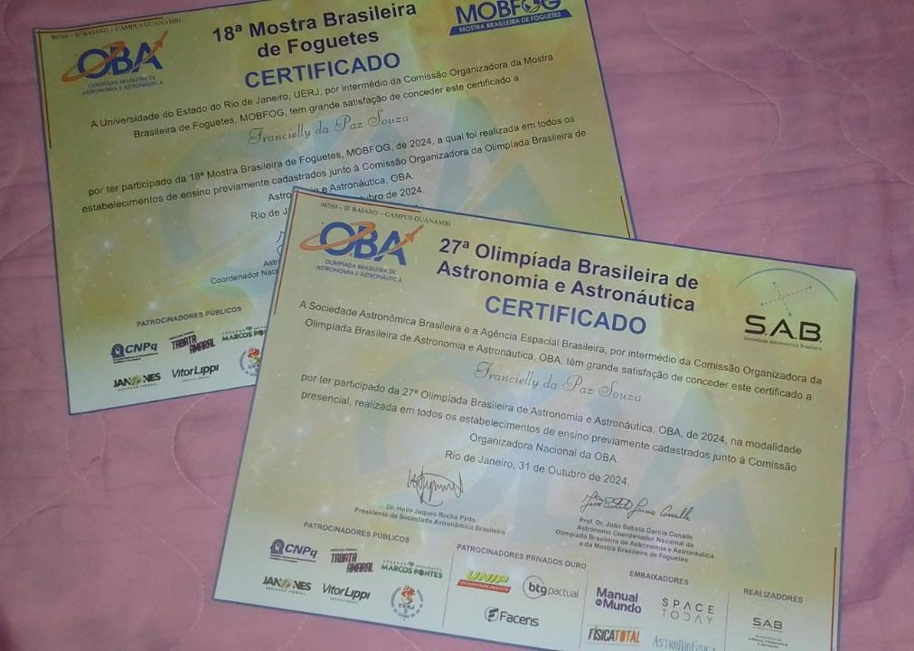
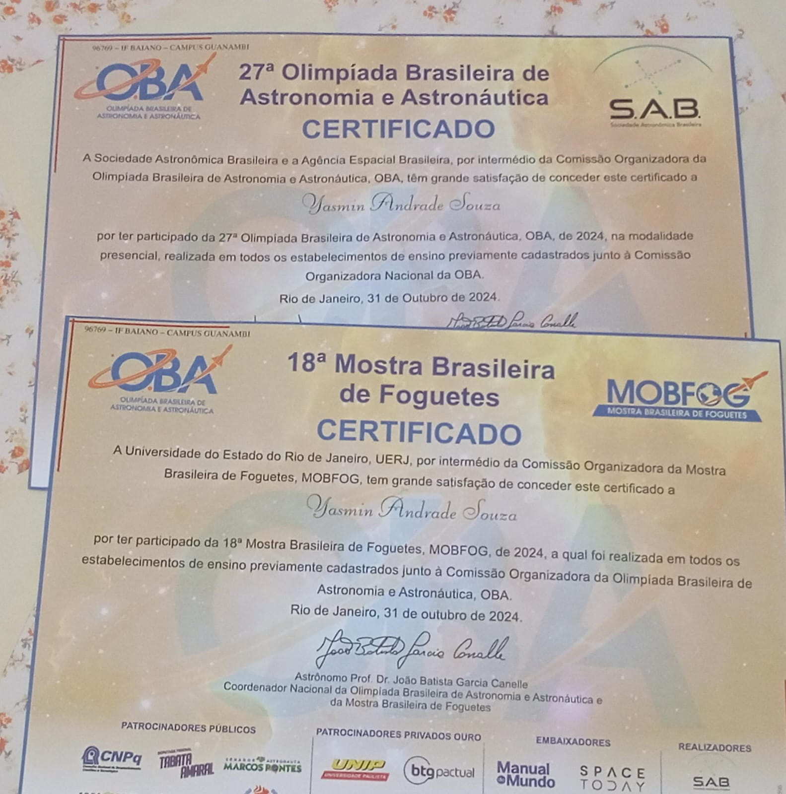
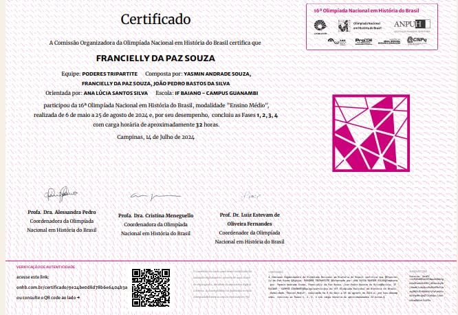
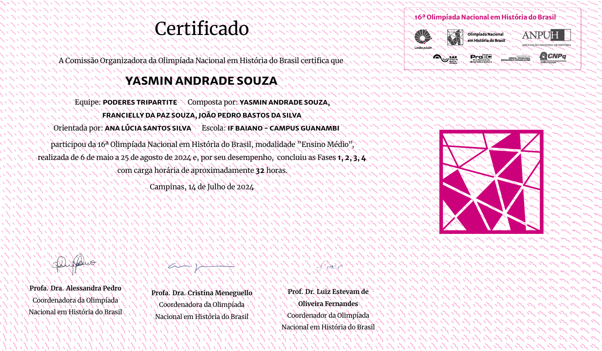
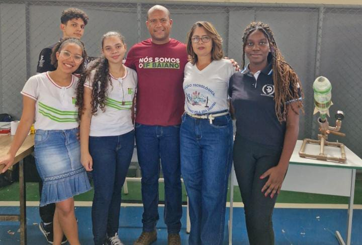
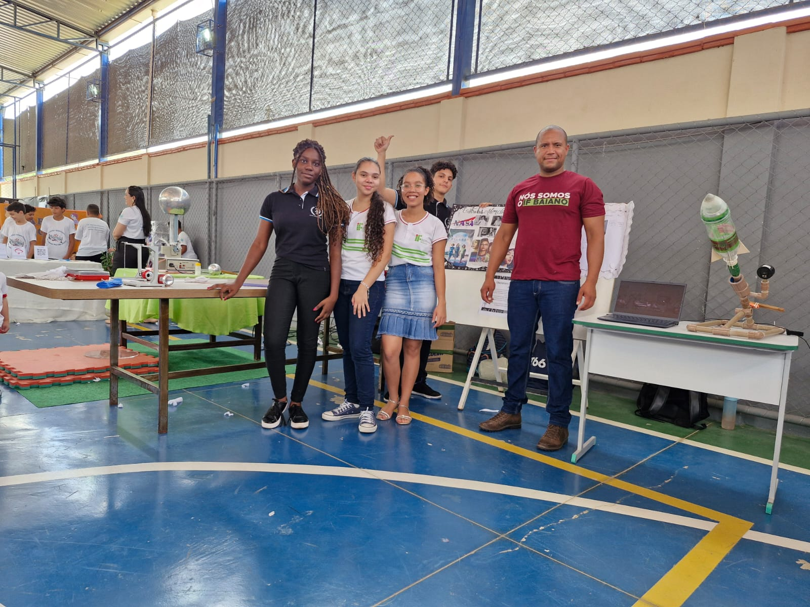

PROJETOS REALIZADOS POR YASMIN E FRANCIELLY!
|   |
Em 2024, Yasmin Andrade e Francielly da Paz participaram da competição de amostras de foguetes da MOBFOG (Olimpíada Brasileira de Foguetes). Com um foguete de garrafa PET que alcançou a marca de 173 metros, elas conquistaram a classificação para a etapa no Rio de Janeiro.
|
|   |
Yasmin e Francielly também participaram, junto com outros colegas, da ONHB (Olimpíada Nacional em História do Brasil). Além disso, formaram um trio com João Pedro, sendo os únicos representantes do IF Baiano – Campus Guanambi a avançar para a 4ª fase da competição. Eles também participaram da ONHBA (Olimpíada Nacional de História da Bahia).
|
|   |
No ano de 2024, Yasmin e Francielly foram convidadas pelo professor Josenilton, de Física, para participarem de uma feira de ciências em Palmas de Monte Alto. Nessa ocasião, tiveram a oportunidade de apresentar a OBA (Olimpíada Brasileira de Astronomia) e levar o projeto Afrocine, compartilhando suas experiências e conhecimentos com os participantes do evento.
|